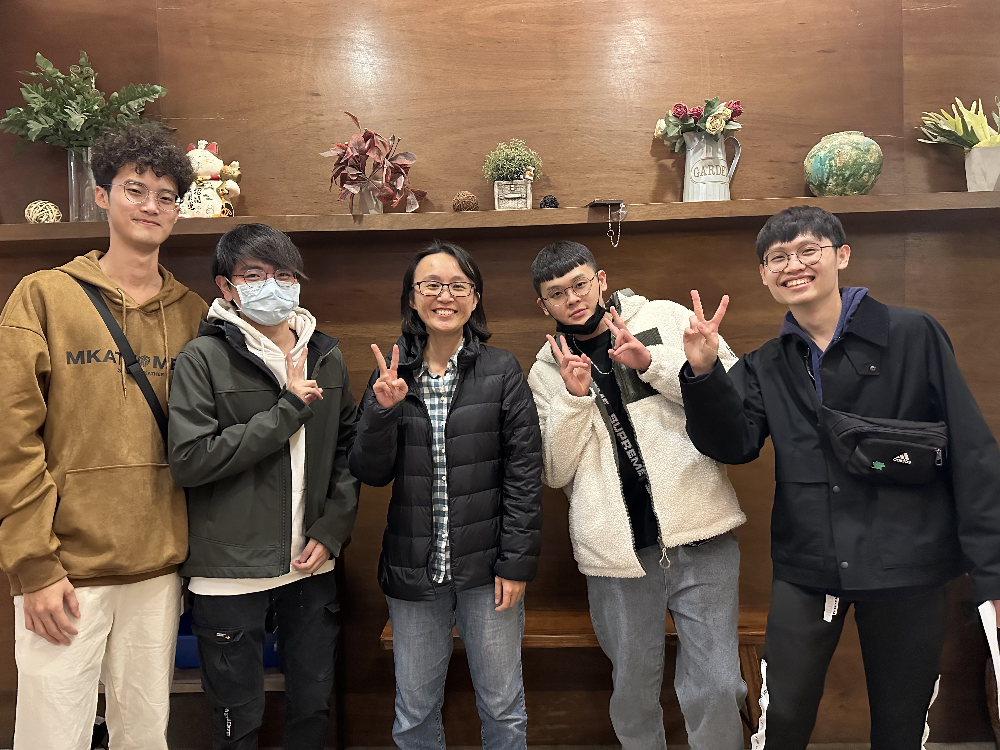
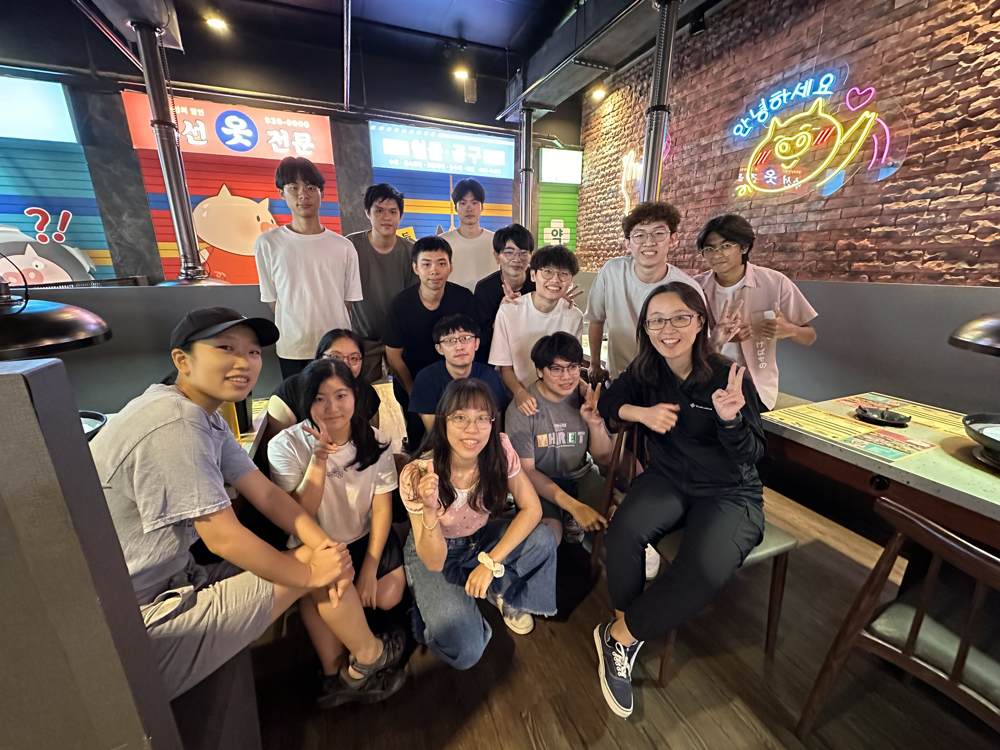
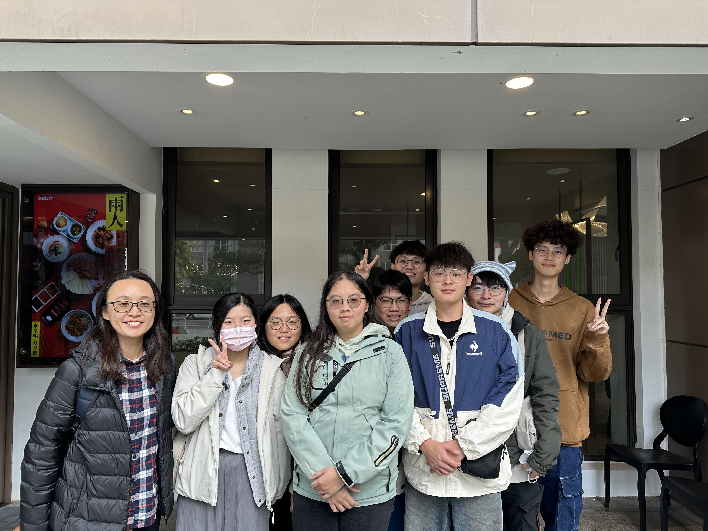
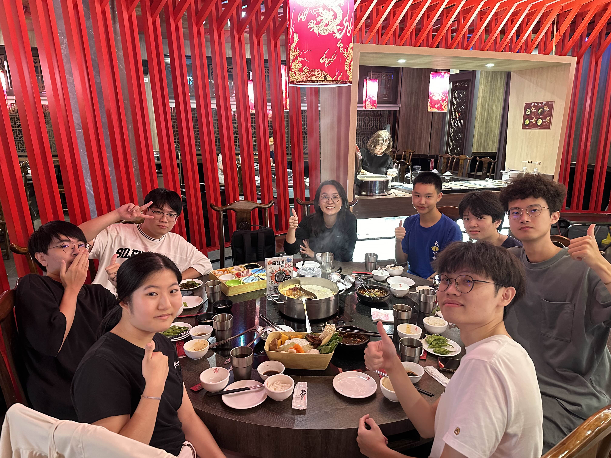
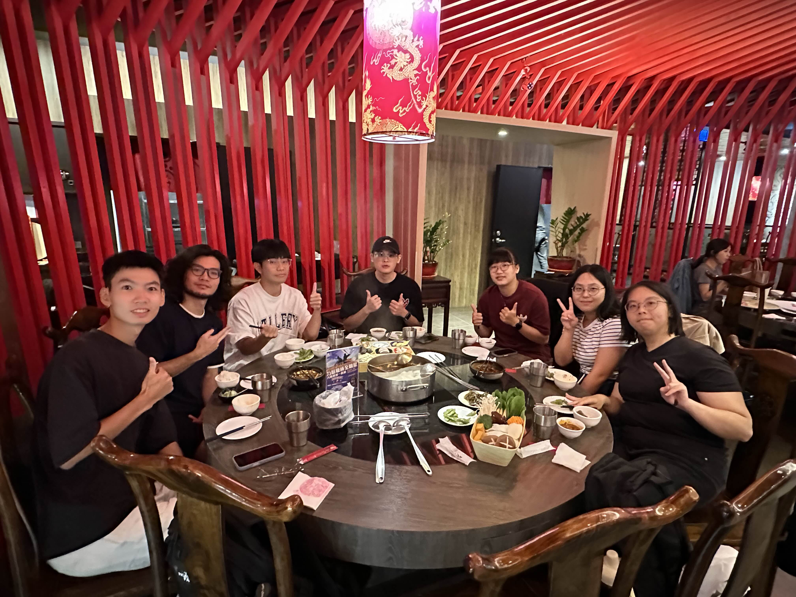
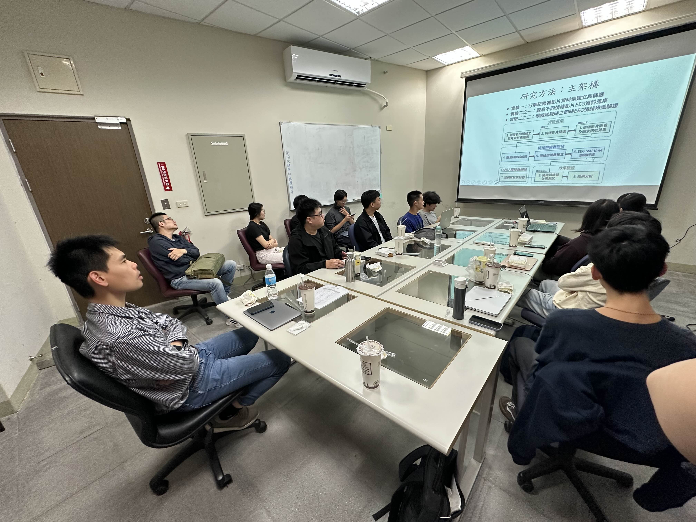

BAISP Lab
Biomedical Artificial Intelligence and Signal Processing Lab
智慧生醫與訊號處理實驗室
實驗室簡介
LABORATORY INTRODUCTION
我們的實驗室專注於開發智慧生醫技術， 特別著重於神經訊號與醫學影像的分析。 研究結合腦波（EEG）、功能性磁振造影（fMRI）、 心電圖（ECG）等生醫訊號與人工智慧技術， 目標是發展可應用於臨床疾病治療、監測與預防， 以及提升日常生活品質的創新解決方案。
目前研究方向涵蓋精準神經調控與生理機制、 駕駛安全系統，以及心血管手術後腦功能評估。 除了運用機器學習與深度學習進行分類與預測， 我們亦重視模型可解釋性， 期望建立具臨床價值的神經生理標記， 深化對腦科學的理解，並推動智慧醫療發展。
About the Laboratory
Our laboratory develops intelligent biomedical technologies for neurophysiological signal and medical image analysis. By integrating electroencephalography, functional magnetic resonance imaging, electrocardiography, and artificial intelligence, we aim to develop innovative approaches for disease treatment, monitoring, prevention, and improved quality of life. Our research includes precision neuromodulation, driving safety, postoperative brain-function assessment, and interpretable machine-learning methods for identifying clinically meaningful neurophysiological markers.
最新消息 (News)
實驗室剪影 (Laboratory Photos)

112 導生聚餐

113 導生聚餐

114 春酒

實驗室送舊迎新（一）

實驗室送舊迎新（二）

澳洲雪梨科技大學王俞凱副教授來訪

115 實驗室尾牙
點擊箭頭或左右滑動查看更多照片